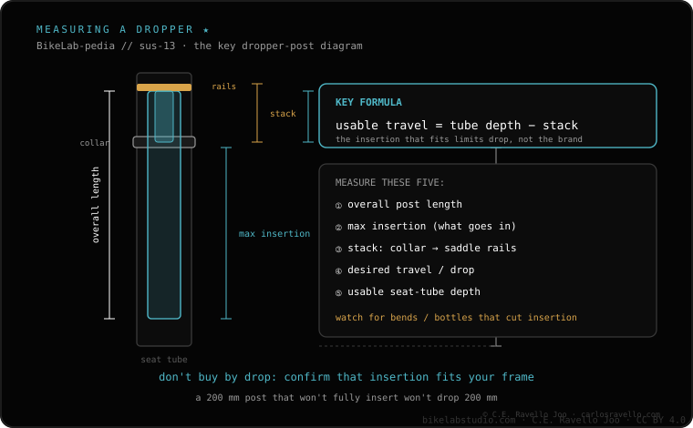

The suspension seatpost damps the impact that reaches the saddle. It complements or replaces a fork or a suspension stem depending on where you feel the hit: in your hands or in your backside. For hand comfort, see the suspension fork or the suspension stem; for the backside, the seatpost is your thing.
Comfort on gravel isn't a single point: it splits between hands and backside. The suspension seatpost attacks the end that the fork and the stem don't touch.
A suspension seatpost carries an elastic mechanism (spring, elastomer or parallelogram) that flexes on every bump. That way it reduces the hit that reaches the saddle and, with it, your backside and lower back. It's the rear equivalent of what the fork or the suspension stem do at the front.
On long broken-track rides, the sum of small impacts at the saddle is what tires you most. The seatpost turns those sharp hits into something far more bearable.
The decision isn't "seatpost or fork" in the abstract, but where the terrain punishes you:

If your main complaint is your backside and back after hours of broken track, the seatpost attacks the problem directly and, if you only suffer there, it can be enough with less weight than a fork. If the pain is in your hands, it's not the right tool: there the fork or the suspension stem rule. And if you doubt the whole setup, first check whether gravel suspension is worth it.
Tell us whether you suffer more in your hands or your backside and your type of route; we'll tell you whether a seatpost, a fork or a stem is your thing. Message us on WhatsApp
It damps the impact that reaches the saddle, reducing the hit to your backside and lower back on every bump.
Depending on where you feel the hit: hands = fork or stem; backside = seatpost. Many combine seatpost and stem.
No: it attacks another point. It works the saddle, not the wheel. It can complement it or be enough on its own if you only suffer in your backside.
© 2026 BikeLab Studio. Content under CC BY 4.0: you may copy, translate and publish it, even for commercial purposes. Citation is mandatory. Without attribution, the license terminates automatically (CC BY 4.0, §6.a) and the use becomes copyright infringement: we request the removal of the content and its deindexing. · Design and ownership: Carlos Ravello Joo